| LvCa004_0001 |
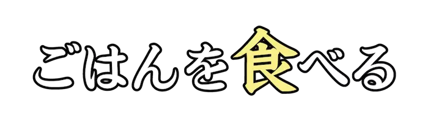 |
た |
【食べる】たべものをかんで、のみこむ。 |
| LvCa004_0002 |
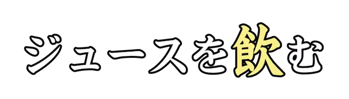 |
の |
【飲む】えきたいなどを、くちのなかへおくりこむ。 |
| LvCa004_0003 |
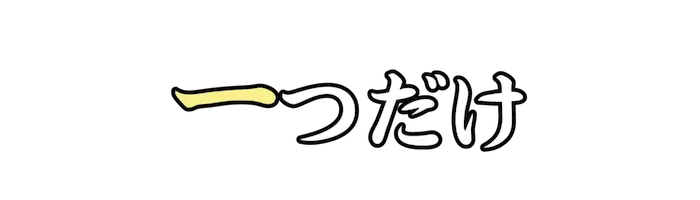 |
ひと |
【一つ】かずのなまえ。すうじの１。 |
| LvCa004_0004 |
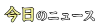 |
きょう |
【今日】いますごしている、このひ。ほんじつ。 |
| LvCa004_0005 |
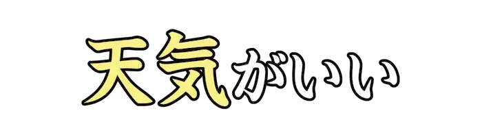 |
てんき |
【天気】あるじかんの、そらのようす。 |
| LvCa004_0006 |
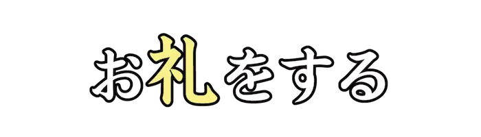 |
れい |
【お礼】かんしゃのきもちをあらわすこと。また、そのことばやおくりもの。 |
| LvCa004_0007 |
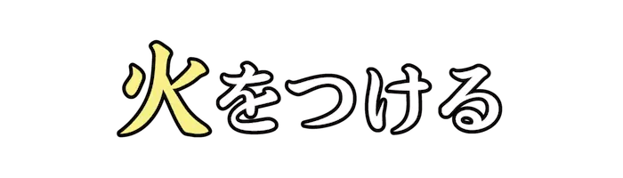 |
ひ |
【火】ものがもえるげんしょう。ほのお。 |
| LvCa004_0008 |
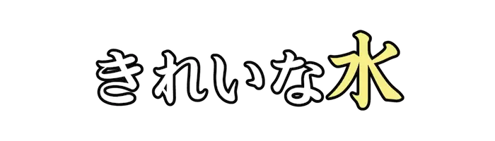 |
みず |
【水】すいそとさんそのかごうぶつ。 |
| LvCa004_0009 |
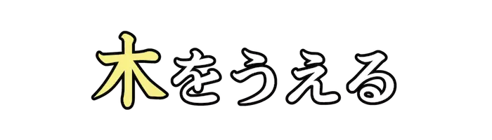 |
き |
【木】ちじょうの『くき』が、かたくなったしょくぶつ。じゅもく。 |
| LvCa004_0010 |
|
かね |
【お金】しへいや、ざいさんのこと。 |
| LvCa004_0011 |
|
せんえん |
【千円札】１０００えんぶんのりようができる、『ぎんこうけん』のひとつ。 |
| LvCa004_0012 |
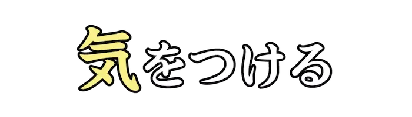 |
き |
【気をつける】こまかいところまで、ちゅういする。 |
| LvCa004_0013 |
|
がっこう |
【学校】きょうしが、せいとにきょういくをうけさせるところ。 |
| LvCa004_0014 |
|
いえ |
【家】ひとのすむための、たてもの。 |
| LvCa004_0015 |
|
そと |
【外】いえからでた、がいぶのくうかん。くぎりのそとがわ。 |
| LvCa004_0016 |
|
なまえ |
【名前】じんぶつにあたえられた、ことば。 |
| LvCa004_0017 |
|
あめ |
【雨】くものなかのすいてきが、ちじょうにおちてくるげんしょう。そのすいてき。 |
| LvCa004_0018 |
|
はい |
【入る】そとがわから、うちがわにうごく。うちがわにいどうする。 |
| LvCa004_0019 |
|
やす |
【休む】うごきをとめて、きゅうけいする。しごとをけっせきする。 |
| LvCa004_0020 |
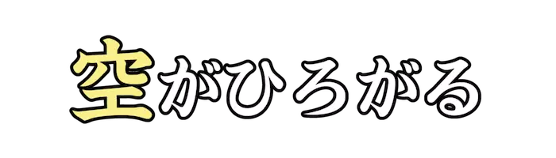 |
そら |
【空】うえにはるかにひろがる、くうかん。 |
| LvCa004_0021 |
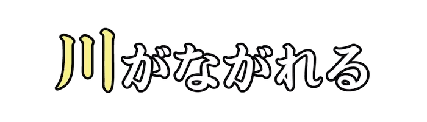 |
かわ |
【川】あめなどがたまり、くぼみにそってながれおりる、すいろ。 |
| LvCa004_0022 |
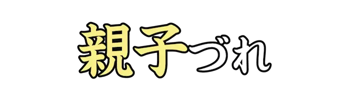 |
おやこ |
【親子連れ】おやとこどもが、いっしょにいることをさすことば。 |
| LvCa004_0023 |
|
もじ |
【文字】ことばをあらわすためにつかわれるきごう。 |
| LvCa004_0024 |
|
はな |
【花】しょくぶつのきかんのひとつ。また、はなをもつしょくぶつのこと。 |
| LvCa004_0025 |
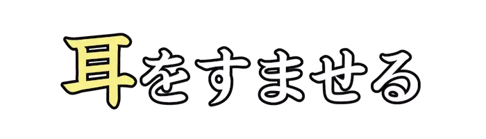 |
みみ |
【耳】あたまのさゆうにある、ちょうかくとバランスをつかさどるきかん。 |
| LvCa004_0026 |
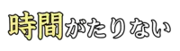 |
じかん |
【時間】あるながさをもつ、とき。 |
| LvCa004_0027 |
|
くるま |
【車】しゃりんをまわるようにさせて、すすむようにしたそうち。 |
| LvCa004_0028 |
|
い |
【生きる】せいぶつが、せいめいがありかつどうできるじょうたいにある。 |
| LvCa004_0029 |
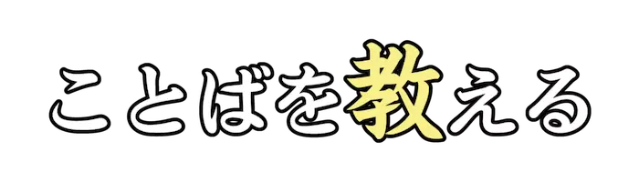 |
おし |
【教える】ちしきなどを、あいてがわかるようにみちびく。 |
| LvCa004_0030 |
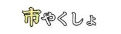 |
し |
【市役所】しの、しちょうやしょくいんがぎょうせいじむをとりあつかう、やくしょ。 |
| LvCa004_0031 |
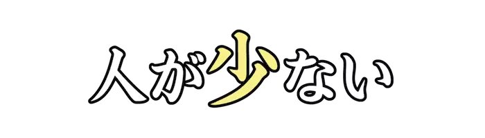 |
すく |
【少ない】りょうや、かずがちいさい。わずかしかない。 |
| LvCa004_0032 |
|
せん |
【線】いとのように、ほそながくれんぞくするもの。 |
| LvCa004_0033 |
|
あさ |
【朝】よあけから、しょうごまでのあいだ。 |
| LvCa004_0034 |
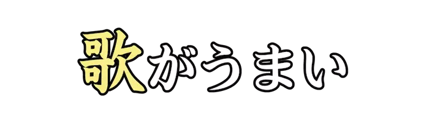 |
うた |
【歌】リズムをつけて、うたうことば。 |
| LvCa004_0035 |
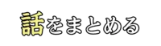 |
はなし |
【話】ことばをかわすこと。かいわ。また、はなしあったないよう。 |
| LvCa004_0036 |
|
と |
【止める】いどうさせずに、もとのところにいさせる。また、ちゅうしする。 |
| LvCa004_0037 |
 |
か |
【書く】もじやふごうをしるす。また、ぶんしょうをつくる。 |
| LvCa004_0038 |
|
みな |
【皆様】そのばにいるひとや、かかわりのあるひとたちを、うやまっていうことば。 |
| LvCa004_0039 |
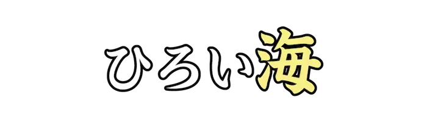 |
うみ |
【海】ちきゅうじょうの、りくちではないぶぶんで、しおみずをふくんでいるところ。 |
| LvCa004_0040 |
|
こうえん |
【公園】まちなどにもうけられた、こうきょうしせつのていえんや、あそびば。 |
| LvCa004_0041 |
|
ふね |
【船】ひとやにもつをのせて、みずのうえをすすむ、こうつうきかん。 |
| LvCa004_0042 |
|
ざん |
【足し算】１+１など、あるかずにほかのかずをたし、ごうけいをもとめるけいさん。 |
| LvCa004_0043 |
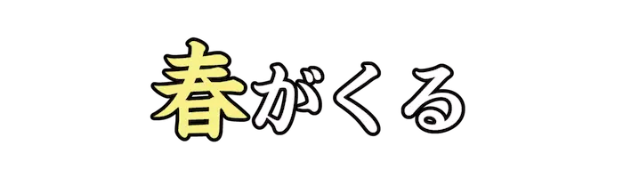 |
はる |
【春】しきのなかで、ふゆとなつのあいだ。にほんでは、３・４・５がつをさす。 |
| LvCa004_0044 |
|
ゆき |
【雪】くものなかのすいじょうきが、けっしょうとなってふってくるもの。 |
| LvCa004_0045 |
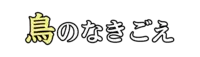 |
とり |
【鳥】せきついどうぶつの、ちょうるいをさすことば。 |
| LvCa004_0046 |
|
ほん |
【本】ぶんしょうや、えがのっているかみがかさなりまとまったもの。しょもつ。 |
| LvCa004_0047 |
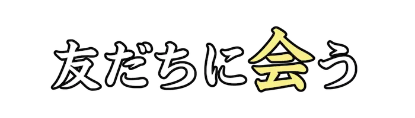 |
あ |
【会う】ひととかおをあわせる。また、ぐうぜん、おなじばしょでたいめんする。 |
| LvCa004_0048 |
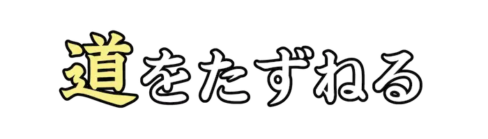 |
みち |
【道】ひとやくるまが、いききできるようにせいびされたつうろや、どうろ。 |
| LvCa004_0049 |
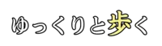 |
ある |
【歩く】あしをうごかして、まえにすすむ。あゆむ。 |
| LvCa004_0050 |
|
はし |
【走る】あしをすばやくうごかして、いどうする。かける。 |
| LvCa004_0051 |
|
ぎゅうにゅう |
【牛乳】うしからしぼった、ちち。ミルク。 |
| LvCa004_0052 |
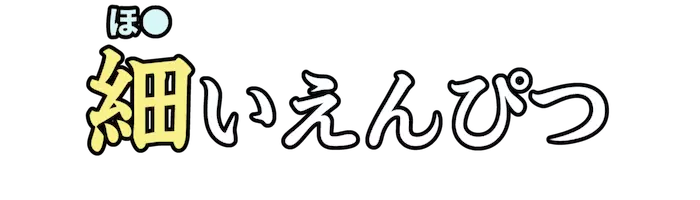 |
ほそ |
【細い】ぼうのかたちのものの、はばがちいさい。 |
| LvCa004_0053 |
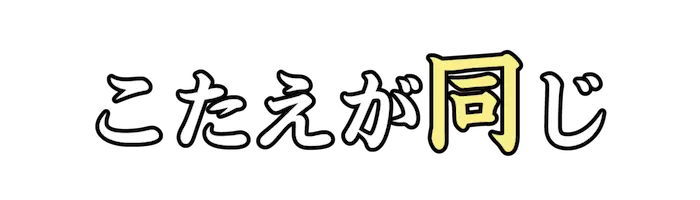 |
おな |
【同じ】ふたついじょうのものをくらべて、ちがいがないさま。 |
| LvCa004_0054 |
|
こめ |
【米】いねのしゅしから、もみがらをとりのぞいたもの。また、ごはん。 |
| LvCa004_0055 |
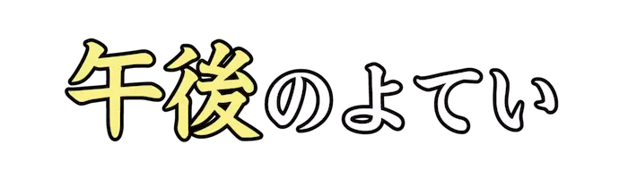 |
ごご |
【午後】しょうごから、にちぼつまでのじかん。ひるすぎ。 |
| LvCa004_0056 |
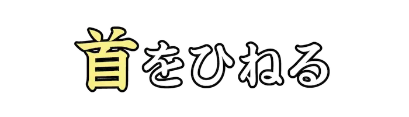 |
くび |
【首】せきついどうぶつの、あたまとどうたいをつないでいるぶぶん。 |
| LvCa004_0057 |
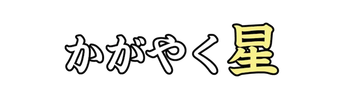 |
ほし |
【星】よぞらにひかっている、てんたい。また、ほしのかたち。★。 |
| LvCa004_0058 |
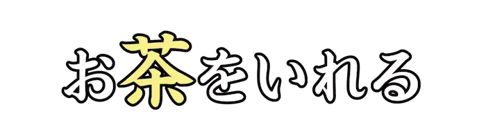 |
ちゃ |
【お茶】『チャのは』を、のみものとしてかこうしたもの。 |
| LvCa004_0059 |
|
よう |
【用】やっておくべきこと。ようじ。 |
| LvCa004_0060 |
|
かえ |
【帰る】じぶんのいえや、もといたばしょにもどる。 |
| LvCa004_0061 |
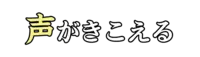 |
こえ |
【声】のどからくちをとおって、でるおと。 |
| LvCa004_0062 |
|
し |
【知る】ものごとを、あたまのなかでにんしきする。きづく。 |
| LvCa004_0063 |
|
わ |
【分かる】いみやくべつが、はっきりする。りかいする。 |
| LvCa004_0064 |
 |
にっき |
【日記】まいにちのできごとや、かんそうのきろく。ダイアリー。 |
| LvCa004_0065 |
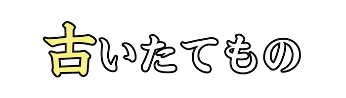 |
ふる |
【古い】ながいじかんがけいかしている。また、じだいがおくれている。 |
| LvCa004_0066 |
|
かいしゃ |
【会社】『かいしゃほう』にもとづいてせつりつされた、ほうじん。 |
| LvCa004_0067 |
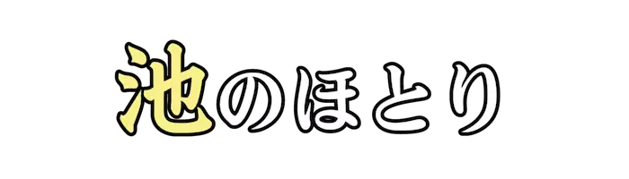 |
いけ |
【池】くぼんだところに、しぜんとみずがたまったところ。みずうみよりもちいさい。 |
| LvCa004_0068 |
|
かぜ |
【風】ちきゅうなどにみられる、くうきのながれ。 |
| LvCa004_0069 |
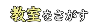 |
きょうしつ |
【教室】がっこうで、じゅぎょうをするへやのこと。 |
| LvCa004_0070 |
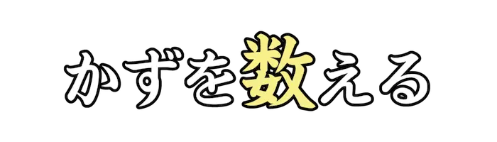 |
かぞ |
【数える】じゅんばんやかずをしらべる。 |
| LvCa004_0071 |
|
あ |
【当てる】あるものを、ほかのものにふれるようにする。 |
| LvCa004_0072 |
|
よる |
【夜】にちぼつから、ひのでのあいだ。そらがくらいじかん。 |
| LvCa004_0073 |
 |
かお |
【顔】とうぶの、まえのぶぶん。ひょうじょう。 |
| LvCa004_0074 |
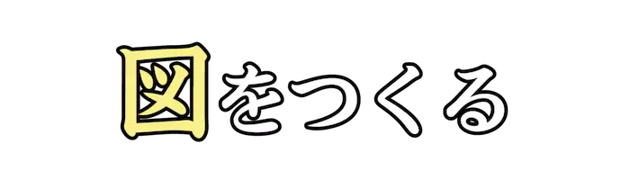 |
ず |
【図】あるものをしめすために、もののかたちやじょうたいをえがいたもの。 |
| LvCa004_0075 |
|
もん |
【門】でいりぐち。 |
| LvCa004_0076 |
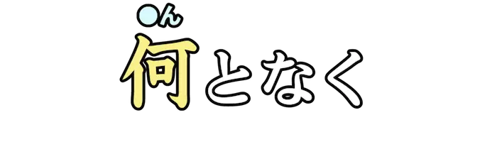 |
なん |
【何となく】おこなったことに、はっきりとりゆうがないさま。 |
| LvCa004_0077 |
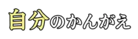 |
じぶん |
【自分】じしんのこと。わたし。 |
| LvCa004_0078 |
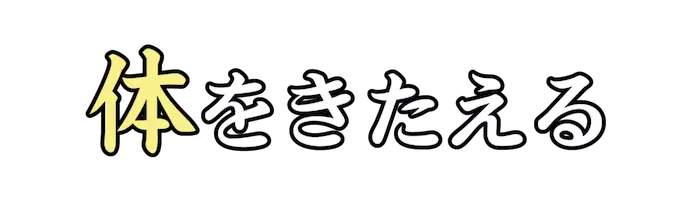 |
からだ |
【体】どうぶつのあたま、どうたい、てあしなどをまとめていうことば。 |
| LvCa004_0079 |
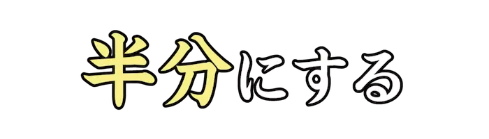 |
はんぶん |
【半分】２ぶんの１。 |
| LvCa004_0080 |
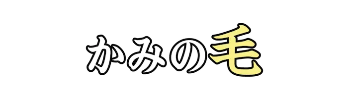 |
け |
【髪の毛】あたまのけ。とうはつ。ヘアー。 |
| LvCa004_0081 |
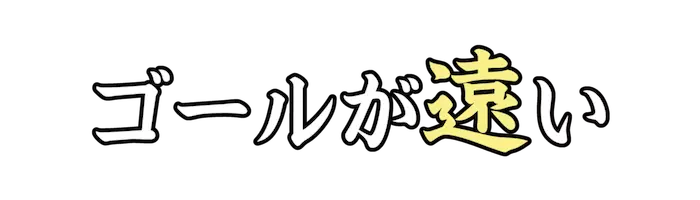 |
とお |
【遠い】ふたつのものが、くうかんてきにはなれているさま。 |
| LvCa004_0082 |
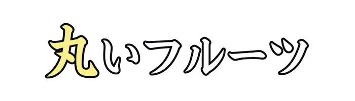 |
まる |
【丸い】えん、またはきゅうのかたちをしている。●のかたち。 |
| LvCa004_0083 |
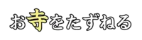 |
てら |
【寺】『そう』または『あま』がすみ、ぶつじをおこなう、たてもの。 |
| LvCa004_0084 |
|
あたら |
【新しい】できてから、それほどじかんがたっていない。しんせんである。 |
| LvCa004_0085 |
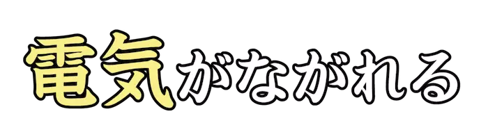 |
でんき |
【電気】まさつでんきや、ほうでんなどのげんしょう。でんきエネルギー。 |
| LvCa004_0086 |
|
たか |
【高い】ものが、じめんからうえにある。 |
| LvCa004_0087 |
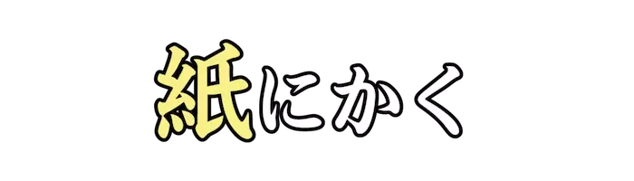 |
かみ |
【紙】しょくぶつの『せんい』をあわせかこうした、うすいもの。 |
| LvCa004_0088 |
|
こころ |
【心が痛む】しんぱいしたり、もうしわけなくおもう。 |
| LvCa004_0089 |
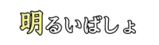 |
あか |
【明るい】ひかりがさして、ものがよくみえるじょうたいである。 |
| LvCa004_0090 |
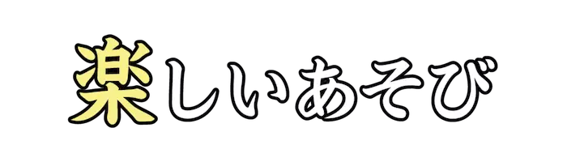 |
たの |
【楽しい】ゆかいなきもちである。あかるく、みちたりたきもち。 |
| LvCa004_0091 |
|
かんが |
【考える】ちしきやけいけんにもとづいて、はんだんしたり、けつろんをみちびきだす。 |
| LvCa004_0092 |
|
まえ |
【前】まっすぐあるくときの、むき。じゅんばんの、さきのほう。 |
| LvCa004_0093 |
 |
まえ |
【この前】すこしまえ。ついさいきん。 |
| LvCa004_0094 |
|
まいにち |
【毎日】『ひ』がいくつもつづくようす。いつのひも。 |
| LvCa004_0095 |
|
くすり |
【薬】びょうきや、きずをなおすためにぬったり、たいないにとりいれるもの。 |
| LvCa004_0096 |
|
ま |
【待つ】ものやひと、ときがくることをのぞみながら、じかんをすごす。 |
| LvCa004_0097 |
|
か |
【勝つ】たたかったり、きそいあって、あいてをまけさせる。しょうりする。 |
| LvCa004_0098 |
|
あじ |
【味】くちのなかの『みかくしんけい』がふれたときの、あまみやからみのかんかく。 |
| LvCa004_0099 |
|
えき |
【駅】れっしゃをとめて、じょうきゃくやかもつのつみおろしをするところ。 |
| LvCa004_0100 |
|
も |
【持つ】てでにぎったり、つかんだりする。 |
{kind=link}
{kind=link}
{kind=link}
{kind=link}
{kind=link}
{kind=link}
{kind=link}
{kind=link}
{kind=link}
{kind=link}
{kind=link}
{kind=link}
{kind=link}
{kind=link}
{kind=link}
{kind=link}
{kind=link}
{kind=link}
{kind=link}
{kind=link}
{kind=link}
{kind=link}
{kind=link}
{kind=link}
{kind=link}
{kind=link}
{kind=link}
{kind=link}
{kind=link}
{kind=link}
{kind=link}
{kind=link}
{kind=link}
{kind=link}
{kind=link}
{kind=link}

{kind=link}
{kind=link}
{kind=link}
{kind=link}
{kind=link}
{kind=link}
{kind=link}
{kind=link}
{kind=link}
{kind=link}
{kind=link}
{kind=link}
{kind=link}
{kind=link}
{kind=link}
{kind=link}
{kind=link}
{kind=link}
{kind=link}
{kind=link}
{kind=link}
{kind=link}
{kind=link}
{kind=link}
{kind=link}
{kind=link}

{kind=link}
{kind=link}
{kind=link}
{kind=link}
{kind=link}
{kind=link}
{kind=link}
{kind=link}

{kind=link}
{kind=link}
{kind=link}
{kind=link}
{kind=link}
{kind=link}
{kind=link}
{kind=link}
{kind=link}
{kind=link}
{kind=link}
{kind=link}
{kind=link}
{kind=link}
{kind=link}
{kind=link}
{kind=link}
{kind=link}
{kind=link}

{kind=link}
{kind=link}
{kind=link}
{kind=link}
{kind=link}
{kind=link}
{kind=link}